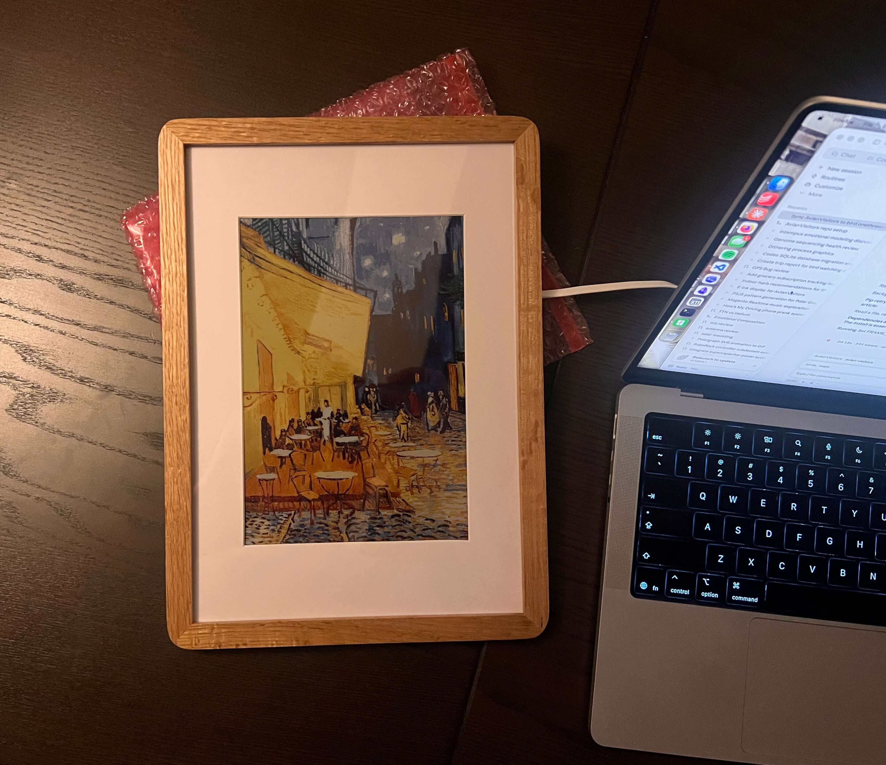
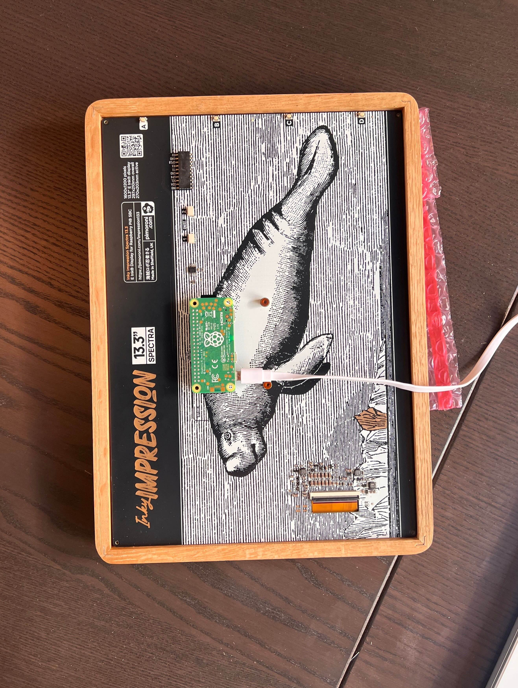
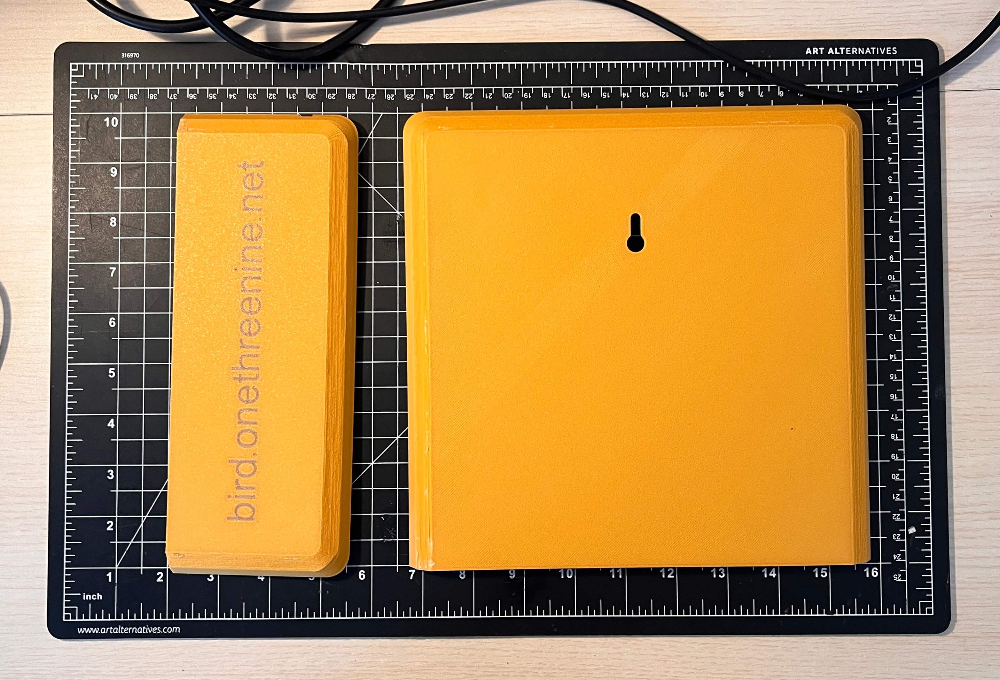
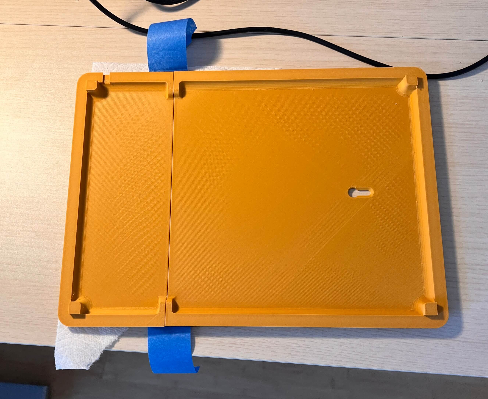
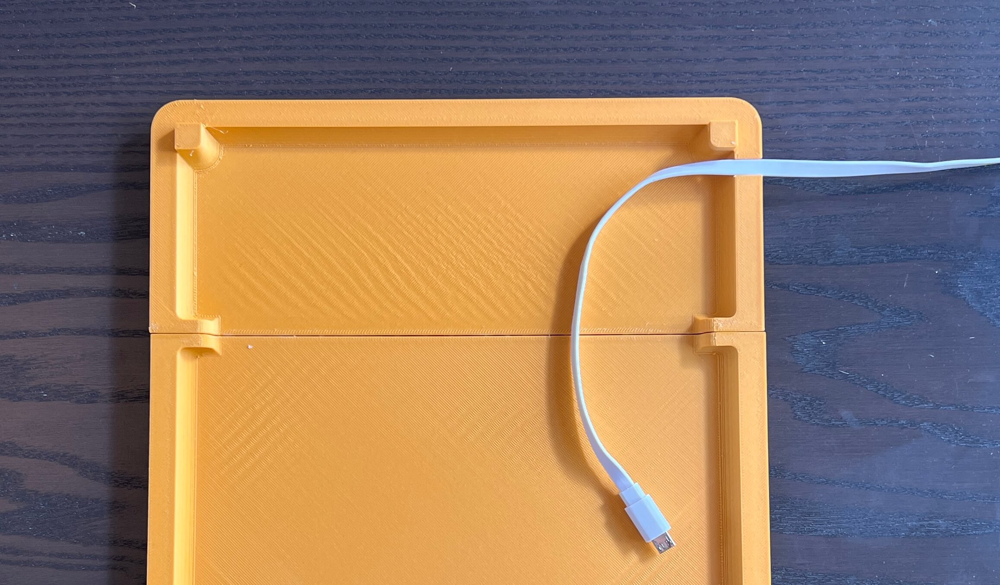
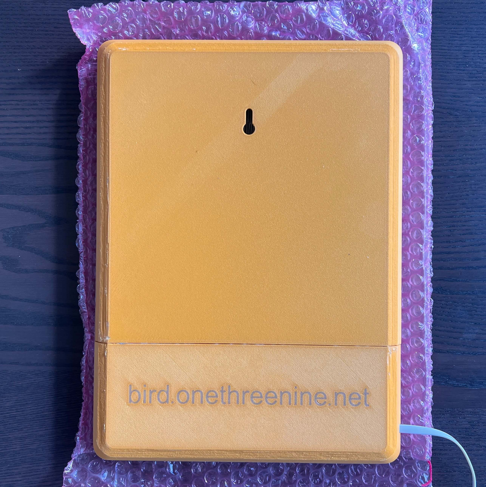
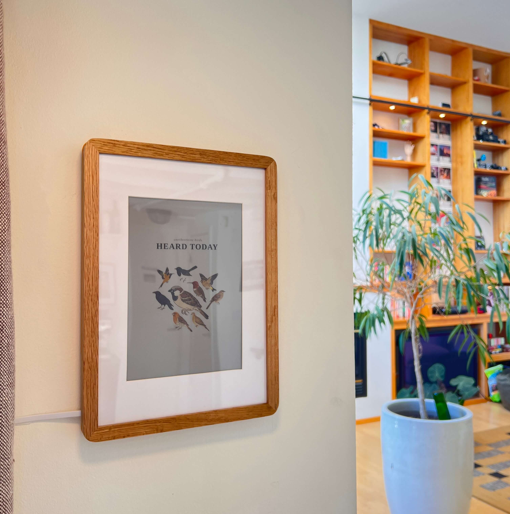

Avian Visitors
 Teddy Warner
| May 2026
| 10–13 mins
Teddy Warner
| May 2026
| 10–13 mins
{kind=link}
I was initally planning on leaving this as a ‘true’ personal project of sorts. I love a good project writeup of course, but frankly I thought this was too quick an afternoon project to warrant any more documentation than a tweet. Twitter thought otherwise …
i mounted a tiny microphone on my apartment balcony to listen for any birds passing by and built a site to collage them as they're heard pic.twitter.com/85KrLRL5tu
— Teddy (@WarnerTeddy) May 28, 2026
i mounted a tiny microphone on my apartment balcony to listen for any birds passing by and built a site to collage them as they're heard pic.twitter.com/85KrLRL5tu
— Teddy (@WarnerTeddy) May 28, 2026
… so I’ve thrown together this short writeup for any of you who want to monitor any avian visitors that may be passing by your own place. It’s short and sweet for now in an attempt to get something out quickly, but this work is part of a longer chain of bird-tangent projects i’ll write something up about soon!
Apartment Birds¶
Avian Visitors is a fork of BirdNET-Pi with a kachō-e collage overlay on top of it. BirdNET-Pi handles the audio capture and the species identification, running Cornell’s BirdNET acoustic classifier against whatever a USB mic on the Pi picks up.
See it running at bird.onethreenine.net:
Building a bird tracking station of your own is easy enough. The full project repo is at github.com/Twarner491/AvianVisitors. Here’s all you need:
While you’re at it, grab a Gemini API key to restyle illustrations (free-tier is fine), an eBird API key to filter species by region.
Birdnet [dot] local¶
Flash the SD card with Raspberry Pi Imager. Pick Raspberry Pi OS Lite (64-bit). In the customisation dialog set:
- Username
- WiFi SSID + password
- Hostname:
birdnet - Enable SSH with password auth
Plug the USB mic into the Pi and place it in a window or mount it outside. I stuck mine to the screen of a small window facing towards my balcony, keeping the Pi inside and away from the elements. Then boot!
If using a Raspberry Pi Zero 2 W
The RPi Zero 2 W has a few additional pre-reqs to handle low power wifi and low ram. Per the upstream BirdNET-Pi RPi0W2 guide:
sudo apt update
sudo apt install dphys-swapfile
sudo sed -i 's/CONF_SWAPSIZE=100/CONF_SWAPSIZE=2048/g' /etc/dphys-swapfile
sudo sed -i 's/#CONF_MAXSWAP=2048/CONF_MAXSWAP=4096/g' /etc/dphys-swapfile
# wifi power-save defeats long-running connections; disable on every boot
sudo sed -i '/^exit 0/i sudo iw wlan0 set power_save off' /etc/rc.local
sudo reboot
Once the Pi’s up on your network, SSH in and run the installer:
ssh <your-username>@birdnet.local
curl -s https://raw.githubusercontent.com/Twarner491/AvianVisitors/avian-visitors/newinstaller.sh | bash
The installer assumes passwordless sudo (Raspberry Pi OS Lite default - if you’ve tightened it, run sudo raspi-config -> System Options -> restore the default first).
This clones the fork, runs BirdNET-Pi’s installer (audio capture, model, web UI, all the things), symlinks the AvianVisitors overlay into the Caddy web root, and reboots itself once everything’s in place. The whole thing takes 20-40 minutes depending on your Pi model and Wi-Fi speed, and when the Pi comes back up, the collage lives at http://birdnet.local/ with the stock BirdNET-Pi UI still reachable at http://birdnet.local/index.php. The menu drawer in the top right opens an admin overlay with native settings, system, log, and tool panels that hit a small JSON facade on the Pi, so you can tune the analyzer, watch services, and tail logs without leaving the collage.
Forward off your LAN (Optional)
The default install keeps everything on your LAN, but avian/forwarding/ has three potential alternatives:
Cloudflare Tunnel
This gives you a public HTTPS URL with no port forwarding and no exposed home IP, which is what I’m using for bird.onethreenine.net. Needs a free Cloudflare account and ~5 minutes to set up. Start by installing cloudflared on the Pi:
sudo apt install -y lsb-release
curl -fsSL https://pkg.cloudflare.com/cloudflare-main.gpg \
| sudo tee /usr/share/keyrings/cloudflare-main.gpg >/dev/null
echo "deb [signed-by=/usr/share/keyrings/cloudflare-main.gpg] https://pkg.cloudflare.com/cloudflared $(lsb_release -cs) main" \
| sudo tee /etc/apt/sources.list.d/cloudflared.list
sudo apt update && sudo apt install -y cloudflared
Then authenticate and create the tunnel, pointing it at a hostname on a domain you own:
cloudflared tunnel login
cloudflared tunnel create birds
cloudflared tunnel route dns birds birds.your-domain.com
Drop the bundled config into place, point the tunnel: field at the UUID cloudflared tunnel create printed back, then install + start the service:
sudo cp ~/BirdNET-Pi/avian/forwarding/cloudflared.yml /etc/cloudflared/config.yml
sudo nano /etc/cloudflared/config.yml
sudo cloudflared service install
sudo systemctl restart cloudflared
To add a password gate on the public URL, set up Cloudflare Access (free tier covers up to 50 users) and add a policy on the hostname. If you’d rather use HTTP Basic auth via Caddy itself, the caddy-auth.caddy snippet has a working example.
Home Assistant REST sensor
This surfaces the most-recent detection as sensor.latest_bird in Home Assistant, so you can wire it into automations (flash a light when a rare species is heard, push a notification, etc). Add to your configuration.yaml:
rest:
- resource: http://birdnet.local/avian/api/birdnet-api.php?action=recent&hours=1
scan_interval: 60
sensor:
- name: "Latest Bird"
value_template: "{{ value_json.species[0].com if value_json.species else 'none' }}"
json_attributes_path: "$.species[0]"
json_attributes:
- sci
- n
- last_seen
- best_conf
The recent endpoint already returns species ordered by count descending, so species[0] gives you the most-frequent bird in the last hour. If you’d rather sort by last_seen, swap the value_template accordingly.
MQTT bridge
The MQTT bridge polls the recent-detections endpoint once a minute and publishes new species under birdnet/<slug> as JSON, which is useful if you want detections flowing through your existing MQTT broker into other services. Install paho-mqtt, copy the bridge script + service file, and enable:
sudo pip3 install paho-mqtt --break-system-packages
cp ~/BirdNET-Pi/avian/forwarding/mqtt-bridge.py ~/avian-mqtt.py
nano ~/avian-mqtt.py # set broker host, topic prefix, credentials
sudo cp ~/BirdNET-Pi/avian/forwarding/avian-mqtt.service /etc/systemd/system/
sudo nano /etc/systemd/system/avian-mqtt.service # set User= if not 'birdnet'
sudo systemctl daemon-reload
sudo systemctl enable --now avian-mqtt
Dedup is in-memory only, so the bridge re-publishes the last hour of detections every time the service restarts. Downstream consumers should be idempotent.
Illustrations + Collage¶
The collage ships with 450 bundled illustrations of the most common North American species, generated via Gemini’s gemini-2.5-flash-image model. Each species gets two poses: perched and in-flight
. The prompt template lives at
avian/scripts/prompt.template.md:
Generate a {pose} {com_name} ({sci_name}) in the style of an
Edo-period Japanese kachō-e woodblock print. Render with VERY FEW
MARKS: the body is 2-4 flat color zones with sharp boundaries, not
feather-by-feather texture. Confident sumi-e ink linework, soft
watercolor washes. Earthy palette: burnt umber, ochre, indigo,
vermillion, muted greens. Eye, beak, and feet in crisp ink.
The bird sits on a CONSISTENT WARM CREAM ground (aged mulberry
paper), filling the frame, identical across every print. This is
the only background: NO branch, NO twig, NO perch, NO scenery. The
perch is implied by toe posture, never drawn.
- Exactly two wings, two legs, one head, one beak, one tail.
- Posture, color, and markings match {com_name} field references.
- Perched: one wing folded, the other tucked. Flight: both wings
fully extended.
Three template variables get substituted per request: scientific name, common name, pose. Restyling the whole image set is a matter of editing this file and re-running the pre-gen script with --force.
export GEMINI_API_KEY='your-key'
# render every species on a cream ground
python3 ~/BirdNET-Pi/avian/scripts/pregen.py \
--labels ~/BirdNET-Pi/model/labels.txt --force
# strip the ground (BiRefNet) and crop to the bird
python3 ~/BirdNET-Pi/avian/scripts/cutout.py
# rebuild the collage silhouette masks
python3 ~/BirdNET-Pi/avian/scripts/build_masks.py
When you pass --ebird-region, the pre-gen script intersects BirdNET’s full species list with whatever eBird reports as observed in that region,eBird region codes are <country>-<state> (e.g. US-CA) for state-level filtering, or <country>-<state>-<county> (e.g. US-CA-085 for Santa Clara County) for tighter filtering. which cuts the render count from ~3000 species globally down to whatever’s actually flying past your place.
It’s worth flagging that Gemini hallucinates anatomy here with non-trivial frequency, so the repo ships the post-audit image set with extra wings, disembodied feet, and training-image watermarks already removed.The audit pass that produced the current bundled set caught ~3% anatomical defects on perched poses and ~5% on flight poses. Flight poses are harder because Gemini’s strong prior for “wings spread” reads any feather mass near the body as a candidate wing, so the same chickadee can take five or six regen attempts before producing a clean output.

Each species ships with a binary alpha maskGenerated offline by downsampling the illustration to ~93px wide, thresholding the alpha channel, and packing the result into a base64-encoded bit-array. The masks are inlined directly in avian/frontend/apt.js 498 of them, 249 species × 2 poses, ~590KB, built by avian/scripts/build_masks.py. that encodes the bird’s silhouette. The frontend uses these masks for two things: tile-packing (so bounding boxes can overlap as long as the silhouettes don’t), and hover hit-testing (so the right bird highlights when you mouse over a region where two tiles’ bounding boxes overlap).
The packing algorithm itself is a center-out spiral: tiles get sorted by area descending, the largest is placed at the center of mass, and each subsequent tile spirals outward from the center until finding a position where its mask doesn’t intersect any already-placed mask. The cost function biases horizontally to produce wider, more landscape-friendly clusters:
where \(b = 2.1\) is the ellipse aspect bias.
Tile sizing was the trickier piece to get right. The naive approach here is to set each tile’s area as a power of its detection count and clamp the result to a per-tile maximum:
This breaks the moment any species crosses the clamp threshold, because every loud species above it renders at the same maximum size regardless of actual count, which flattens the visual hierarchy that’s the whole point of sizing tiles by frequency. The fix is to normalize against a viewport area budget instead: each tile gets a count-weighted score, all scores get scaled so they sum to a fraction of the viewport, and tile sizes derive from the scaled areas:
where \(B\) is the viewport area budget (28% to 46% of viewport depending on species count) and \(\text{ar}_i\) is the species’ aspect ratio. The 0.65 exponent gives a visible hierarchy (a 400-call species renders ~5× the area of a 30-call one) without the cap-induced flattening, and because everything’s normalized against viewport area, the same logic produces a sensible layout at any screen size.
After the initial pack, if any tile lands off-screen, every tile shrinks by 7% and the whole layout repacks, looping up to 10 times before bailing (by which point the linear scale is ~50% of original). This guarantees every species fits at every viewport from 390px mobile widths up through 2560px studio displays, which matters more than you’d think on a site where the collage IS the page.
~ Real Time¶
The frontend polls the recent-detections endpoint every 30 seconds, and when a new species crosses into the current time window it joins the layout at the next refresh, with the cluster shifting just slightly to make room.The frontend does a full re-pack rather than incremental insertion. Repacking ~10 species at the current grid stride (4px) takes <20ms in V8 on a Pi 4 client. The window picker (1H / 12H / 24H / 7D / ALL) refetches with the matching ?hours=N and re-renders in place, and the whole thing happens quietly enough that I’ve left the page open for hours at a time without noticing the transitions.
Clicking any tile in the collage (or any card in the atlas view) opens a detail modal that hits a Wikipedia summary endpoint for the species description and offers both perched and flight poses via a toggle. The recordings list pulls the most-recent BirdNET-Pi-archived mp3s for the species, matched on the common name and sourced from $HOME/BirdSongs/Extracted/By_Date/<date>/<Common_Name>/, each rendered alongside its spectrogram, with wiki and eBird chips at the bottom for external references.
Frame-ous¶
I’ve been thoroughly enjoying this little weekend build the past few weeks, but now often find myself slipping to check the website instead of actually appreciating the birds that have stopped by! In an attempt to appease my curiosity while remaining distraction-free, I’ve built out a nice wooden-framed e-ink feed to hang right next to my bird-mic’ed window, dynamically populated with any birds heard over the past 24 hours.
Everything you need to build a frame of your own can be found at github.com/Twarner491/AvianVisitors. Bill of materials:
To start, I flashed an old Raspberry Pi Zero 2 W i had laying around with Raspberry Pi OS Lite (64-bit) via Raspberry Pi Imager. In the customisation dialog set:
- Username
- WiFi SSID + password
- Hostname:
birdpic - Enable SSH with password auth
Install the SD card in the Pi, and then mount it to the back of the e-ink as shown below. I’ve already removed the protective film from the plexiglass on the frame, as well as the front of the e-ink, and then installed the e-ink within the frame, underneath the matboard.
Note that the micro USB cable should be attached to the bottom of the two USB ports, the one closest to the camera connector.


Then, just like the previous Pi, once it’s up on your network, SSH in, clone the repo, and run the installer:
ssh <your-username>@birdpic.local
git clone https://github.com/Twarner491/AvianVisitors
cd AvianVisitors/frame && ./install.sh
The installer turns on SPI + I2C (the panel speaks both), pulls in Pillow and Pimoroni’s inky library, registers a display.py systemd timer that wakes every 15 minutes, and drops a starter config at ~/.birdframe/config.toml.
E-ink displays like the Pimoroni one we’re using for this build are funky and incredibly cool. These displays are mechanical processes, and physically move pigment around with an electric field to produce an image.
This process takes time! The Pimoroni in particular takes a dozen seconds each time we want to refresh it’s content. And we want to be wary of this in our frame, so by default we’ll only attempt a re-render every 15 mins, and only if a new bird has actually been detected.
Because we’re operating at a lower fidelity here, I’ve opted to render our collage on demand and serve it at /frame.png with Cloudflare Browser Rendering. This allows our Pi Zero to just fetch this finished PNG, rather than render the page itself on edge. And while my frame is cable powered because I had some curtains to tuck the mess behind, no edge-rendering should make it a whole lot easier to go cordless should I like to in the future! /frame.png is gated by a shared key so a stray crawler can’t burn through the free render budget. Point the config at it:Staying LAN-only without the Worker? Set shoot = true and run the screenshot on any browser-capable box on a cron, copying the PNG over to the Pi. The frame README has the snippet.
base_url = "https://bird.onethreenine.net"
image_url = "https://bird.onethreenine.net/frame.png?k=YOUR_FRAME_KEY"
And boom! After a reset, your screen should be live with birds! Once everything’s proven working here, we’ll want to cover up the back to hold the screen in place and allow us to mount the frame on our wall. The wooden backing that came with the frame doesn’t work given the additional contents we’ve introduced, so I hopped into Fusion and threw together a quick new backplate of my own
My printer’s bed was slightly too small for this entire job, so I wound up splitting the model in two. I cleaned up both prints and then used a bit of superglue to tack them together, with a bit of blue tape underneath to prevent any from squeezing out.


With the backplate assembled, I moved on to fixing this to the frame itself. I started by routing the power cable through its designated spot

… before mounting the backing to the frame itself with a bead of hot glue around the frame rim. You could also use some double-sided tape here, I imagine.

Then all that’s left to do is hang it up and power it on! (and a bit of cable management, ofc)

And there you have it, a wonderfuly simple build to keep track of any little guys that may be passing by :)
Enter your email to receive the occasional update.